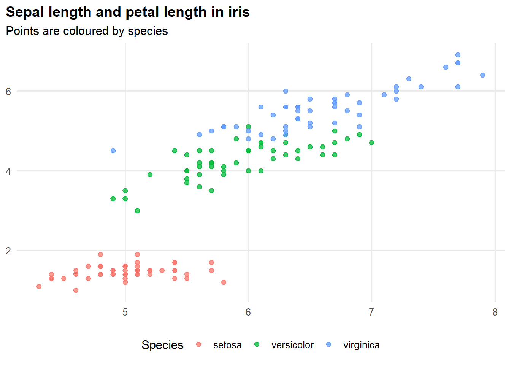
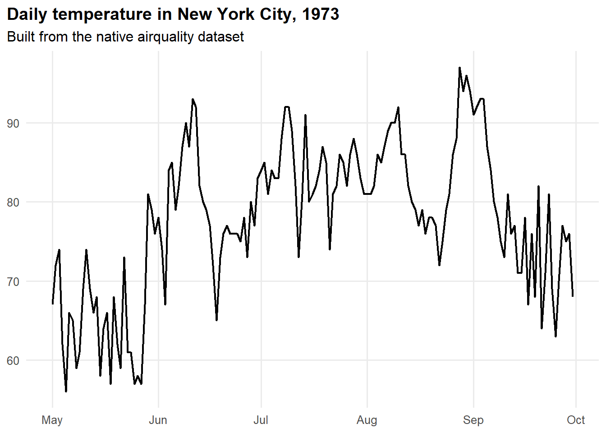
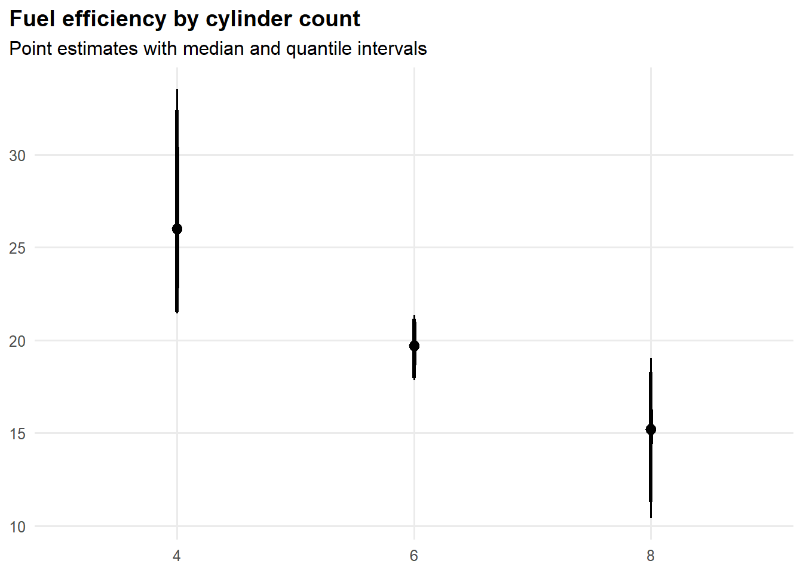
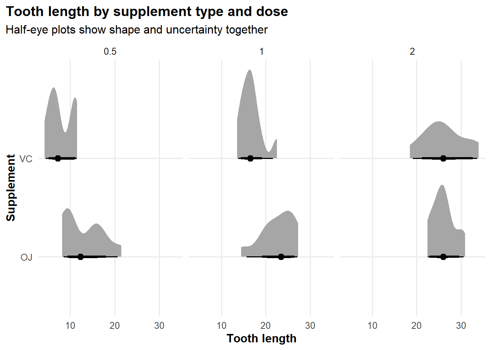

library(ggplot2)
library(ggdist)
library(dplyr)
Attaching package: 'dplyr'The following objects are masked from 'package:stats':
filter, lagThe following objects are masked from 'package:base':
intersect, setdiff, setequal, unionThis report was generated using AI under general human direction. At the time of generation, the contents have not been comprehensively reviewed by a human analyst.
This guide focuses on reusable plotting patterns for ggplot2 and ggdist. The examples use built-in R datasets so the document can render without external data files.
The code below is written to be modular: the helper functions can be copied into other scripts, packages, Shiny apps, or reports with minimal modification.
The next chunk loads the packages used throughout the guide. The examples rely on ggplot2 for general plotting, ggdist for distribution and interval geoms, and dplyr for light data preparation.
library(ggplot2)
library(ggdist)
library(dplyr)
Attaching package: 'dplyr'The following objects are masked from 'package:stats':
filter, lagThe following objects are masked from 'package:base':
intersect, setdiff, setequal, unionThe helpers in this section are designed for repeated use across projects. They take a data frame and column names, which makes them easy to drop into a function, app, or analysis script.
Use this when you want a light, readable theme for exploratory graphics or report-ready figures. It works well for scatter plots, line charts, and summaries built from small or medium-sized tabular data.
plot_theme_publication <- function(base_size = 12, base_family = "") {
theme_minimal(base_size = base_size, base_family = base_family) +
theme(
panel.grid.minor = element_blank(),
plot.title.position = "plot",
plot.title = element_text(face = "bold"),
axis.title = element_text(face = "bold"),
legend.position = "bottom"
)
}Use this for two continuous variables, optionally coloured by a grouping variable. This pattern is common in customer analysis, quality control, ecological data, and any tabular dataset with paired measurements.
plot_scatter_template <- function(data, x, y, color = NULL, smooth = TRUE) {
p <- ggplot(data, aes(x = {{ x }}, y = {{ y }})) +
geom_point(alpha = 0.75, size = 2)
if (!rlang::quo_is_null(rlang::enquo(color))) {
p <- p + aes(color = {{ color }})
}
if (smooth) {
p <- p + geom_smooth(se = FALSE, linewidth = 0.8)
}
p +
labs(x = NULL, y = NULL) +
plot_theme_publication()
}Use this when the x-axis is ordered data such as dates, time stamps, or sequence numbers. It is useful for operational metrics, environmental data, or any repeated measurement over time.
plot_line_template <- function(data, x, y, color = NULL) {
p <- ggplot(data, aes(x = {{ x }}, y = {{ y }})) +
geom_line(linewidth = 0.8)
if (!rlang::quo_is_null(rlang::enquo(color))) {
p <- p + aes(color = {{ color }})
}
p +
labs(x = NULL, y = NULL) +
plot_theme_publication()
}Use this when you want to show a point estimate and uncertainty interval for groups. This is especially helpful for survey data, experiment summaries, and any grouped numeric outcome.
plot_pointinterval_template <- function(data, x, y) {
ggplot(data, aes(x = {{ x }}, y = {{ y }})) +
stat_pointinterval(
point_interval = median_qi,
.width = c(0.5, 0.8, 0.95)
) +
labs(x = NULL, y = NULL) +
plot_theme_publication()
}Use this for showing a full distribution, not just a summary. It works well for skewed variables, multi-modal data, and group comparisons where the shape of the distribution matters.
plot_halfeye_template <- function(data, x, group) {
ggplot(data, aes(x = {{ x }}, y = {{ group }})) +
stat_halfeye(
adjust = 0.8,
.width = c(0.5, 0.8, 0.95)
) +
labs(x = NULL, y = NULL) +
plot_theme_publication()
}irisUse this example when you have two continuous measurements and a categorical grouping variable. The iris dataset is a classic example because it contains flower measurements by species.
plot_scatter_template(
data = iris,
x = Sepal.Length,
y = Petal.Length,
color = Species,
smooth = FALSE
) +
labs(
title = "Sepal length and petal length in iris",
subtitle = "Points are coloured by species"
)
airqualityUse this example when your data are ordered over time or another sequence. The airquality dataset is built into R and works well for showing a daily trend after a small amount of date preparation.
airquality_dates <- airquality |>
mutate(Date = as.Date(sprintf("1973-%02d-%02d", Month, Day)))
plot_line_template(
data = airquality_dates |> filter(!is.na(Temp)),
x = Date,
y = Temp
) +
labs(
title = "Daily temperature in New York City, 1973",
subtitle = "Built from the native airquality dataset"
)
mtcarsUse this example when you want to compare a numeric outcome across groups. The mtcars dataset is a convenient built-in dataset for grouped summaries.
mtcars |>
mutate(cyl = factor(cyl)) |>
plot_pointinterval_template(x = cyl, y = mpg) +
labs(
title = "Fuel efficiency by cylinder count",
subtitle = "Point estimates with median and quantile intervals"
)
ToothGrowthUse this example when the distribution itself matters, not just the mean. ToothGrowth is useful for showing the full spread of a numeric variable across treatment groups.
ToothGrowth |>
mutate(dose = factor(dose)) |>
plot_halfeye_template(x = len, group = supp) +
facet_wrap(~ dose) +
labs(
title = "Tooth length by supplement type and dose",
subtitle = "Half-eye plots show shape and uncertainty together",
x = "Tooth length",
y = "Supplement"
)
The snippets below are the most directly reusable parts of the guide.
# Theme
plot_theme_publication <- function(base_size = 12, base_family = "") {
theme_minimal(base_size = base_size, base_family = base_family) +
theme(
panel.grid.minor = element_blank(),
plot.title.position = "plot",
plot.title = element_text(face = "bold"),
axis.title = element_text(face = "bold"),
legend.position = "bottom"
)
}
# Scatter template
plot_scatter_template <- function(data, x, y, color = NULL, smooth = TRUE) {
p <- ggplot(data, aes(x = {{ x }}, y = {{ y }})) +
geom_point(alpha = 0.75, size = 2)
if (!rlang::quo_is_null(rlang::enquo(color))) {
p <- p + aes(color = {{ color }})
}
if (smooth) {
p <- p + geom_smooth(se = FALSE, linewidth = 0.8)
}
p + labs(x = NULL, y = NULL) + plot_theme_publication()
}
# Interval template
plot_pointinterval_template <- function(data, x, y) {
ggplot(data, aes(x = {{ x }}, y = {{ y }})) +
stat_pointinterval(
point_interval = median_qi,
.width = c(0.5, 0.8, 0.95)
) +
labs(x = NULL, y = NULL) +
plot_theme_publication()
}For quick exploratory plots, start with the scatter and line templates from ggplot2. When you want to communicate uncertainty or distribution shape, switch to ggdist geoms such as stat_pointinterval() or stat_halfeye().
The main design principle behind the code in this guide is consistency: keep the theme, axis handling, and helper signatures similar so the same snippets can move between notebooks, reports, and apps.